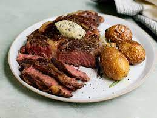

Steak Meal

Description
This recipe will endulge all our meat lovers out there! Read ahead and be amazed how easy it is to get a sizzling
sensation of flavour in your very own kitchen.
Be advised, you should not eat this dish regulary if you
are prone to cholesterol.
Ingredients
- 300g Steak (cut of your choice)
- 200g of your favourite potatoes
- 2 cloves of garlic
- 1 knob of butter
- 2 sprigs each of rosemary and thyme
Steps
- Season your steak with salt and pepper and let it come to room temperature
- Heat your cast iron skillet with oil until it is hot
- Bring in your steak and sear it for about 3-4mins on each side until a golden brown crust develops.
- Remove the steak and add the butter as well as the rosemary, thyme and lightly smashed garlic
- Melt the butter and use the herbs to infuse some flavour
- Reintroduce the steak and baste it with the butter for a couple more minutes until it is done to your liking
- Serve with your potatoes
- Enjoy!